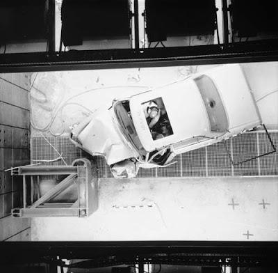
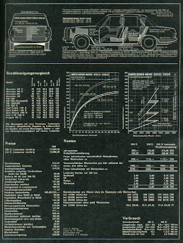
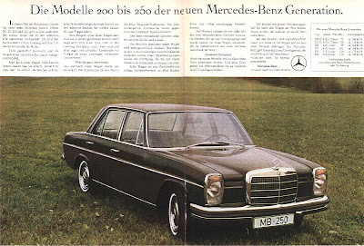
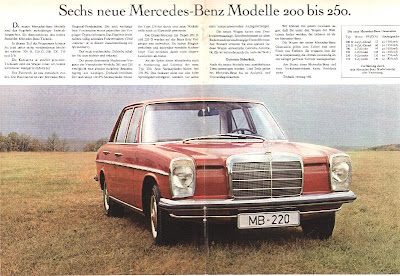
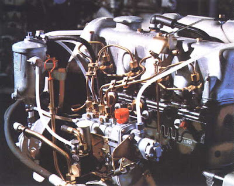

Dados Técnicos
Nesta secção estão reunidas fichas, referências visuais e elementos técnicos que ajudam a compreender melhor a configuração, as variantes e as especificações do Mercedes W115.
Mais do que uma simples coleção de números, estes dados ajudam a contextualizar o modelo e a perceber aquilo que o distinguiu na sua época: motorização, dimensões, soluções mecânicas e detalhes de construção.
Nota: estas referências técnicas complementam a parte histórica e os relatos de restauro, servindo como base para comparação, identificação e consulta.




